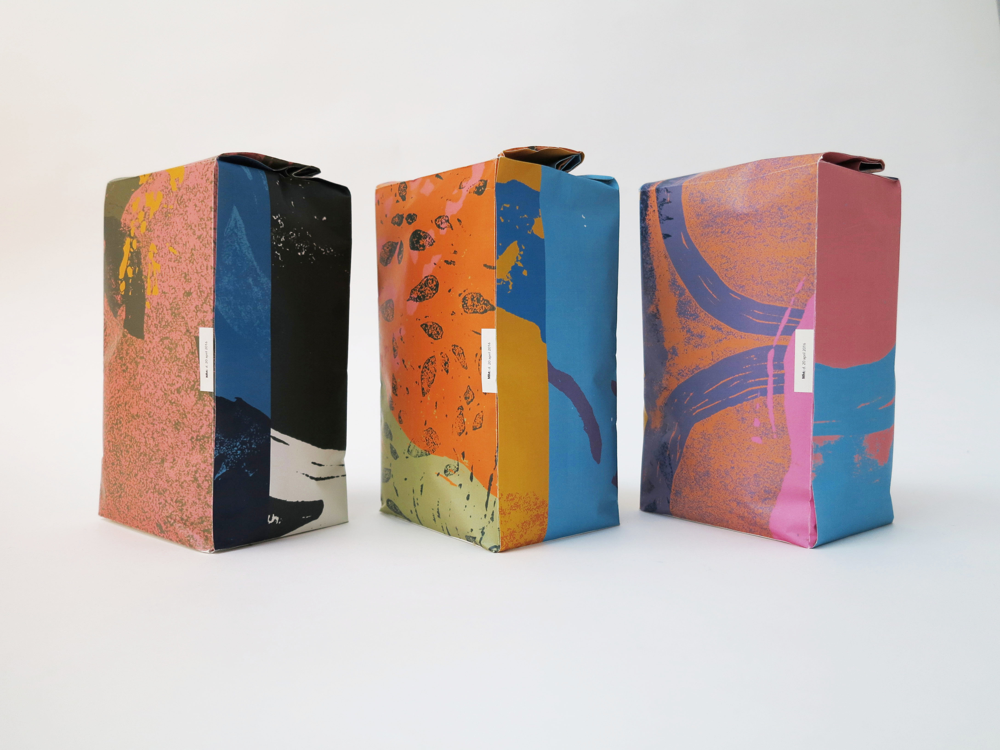
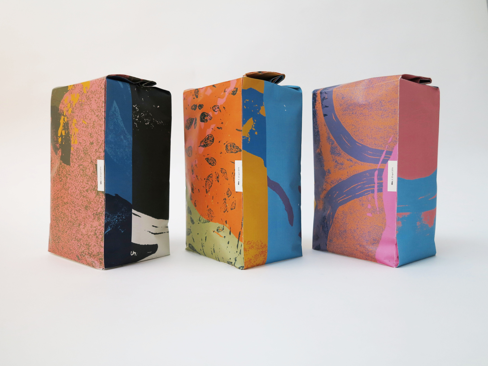

Lars Batting is a man with an exceptional passion for the perfect bread. Our approach for Batting's bakery was to tell Lars Battings story with a poetic and abstract approach. This character of the brand was defined through linocuts based on shapes in Lars’ bread - in colors of the early morning sky ☾ when the bakers are at work. With this expressive, abstract visual universe, the logotype was set in a sharp and fixed typography. All to reflect the spirit of the bakery – which we hoped to pass on to customers of the bakery.


 
